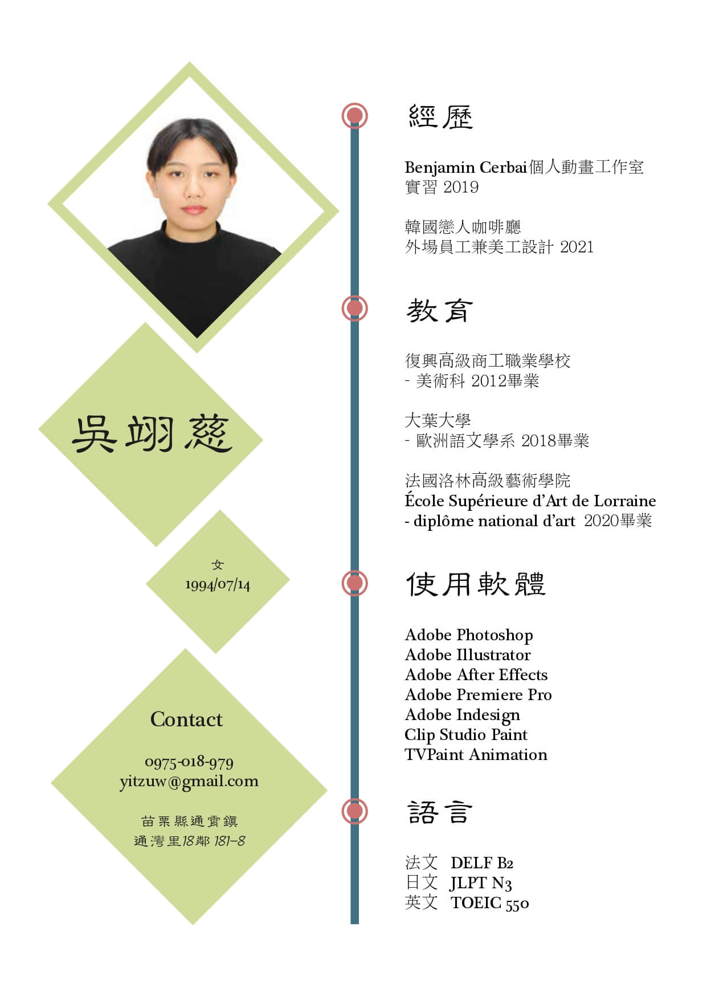

自傳
副標題
我成長在一個幸福的五人家庭中，爸爸與其兄弟經營一間修車小工廠，媽媽則協助工廠的會計及廠商的接洽。我在手足中排行第二，上有一個哥哥，下有一個妹妹，哥哥與妹妹都是理科生，擅長數理計算。
相較於我們手足，我與他們較不同，雖然我對於數理非常地不拿手，但我從小就熱愛畫圖，國中小學在居住地鎮上就讀美術班，高中時就到現在新北永和區的復興美工就讀美術科，到了大學在台南應用科技大學就讀了兩年的美術系後，認為傳統繪圖並不適合我，所以我轉學到了大葉大學就讀歐洲語文學校學習法文。
那時我抱著到異國學習藝術的夢，並沒有直接到當地讀語言學校是因為原生家庭並不是特別富裕，父母也擔心獨自一人到國外去，所以我選擇了先在離家最近的大學學習法文，一邊了解當地文化及語言，也順便找找可以透過怎麼樣的管道進入當地藝術學院，後來在歐洲語文學系畢業當年，順利拿到一間自己理想中的藝術學院，那間藝術學院叫公立洛林高等藝術學院。
我因為有藝術基礎．跳級從二年級開始就讀，我讀的科系是communication，可以說是藝術傳媒，但法國的學習風氣非常開放，可以依照學生自己的希望做任何的題材的作品，而我在藝術學院主要製作動畫、漫畫及插畫。
法國學制式３年制，在三年級時就開始準備畢業個展，在下學期時，碰巧遇到新冠肺炎疫情，但我也順利在疫情之下得到畢業資格，畢業後我沒有留在當地就職，而是回到台灣，是因為我認為自己還是喜歡台灣的環境，自己的家人跟朋友也都在台灣，所以並沒有待在法國的強烈念頭。
我比同齡人還要晚３、４年進入職場，當我剛進入社會時，我的高中朋友早就已經有幾年的工作經驗了，但我並不後悔，因為我多幾年的時間在國外體驗不同的生活，在國外的辛苦生活也對我在各個方面有許多磨練，也讓我對自己有更清楚的理解。
Artwork作品集
插圖


動畫
CV履歷表
Contact聯繫我
| 連絡電話: |
|---|
| 0975-018-979 |
| 聯絡信箱: |
| yitzuw@gamil.com |